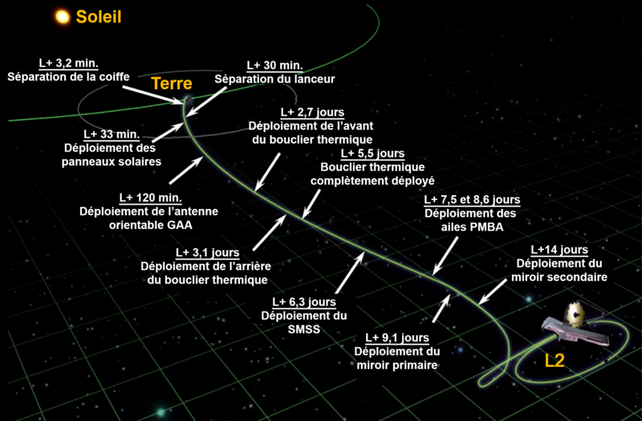

Le télescope
Le James-Webb (en anglais James Webb Space Telescope, également couramment désigné par son sigle JWST) est un télescope spatial servant d’observatoire spatial dans l’infrarouge, conçu par la NASA, conjointement avec l’Agence spatiale européenne (ESA) et l’Agence spatiale canadienne (ASC). Plus grand et plus onéreux télescope spatial jamais lancé dans l’espace, le JWST est conçu pour poursuivre les travaux du télescope spatial Hubble, en effectuant toutefois ses observations dans des longueurs d’onde plus longues. Son lancement a eu lieu le 25 décembre 2021.
Les observations du JWST sont centrées sur l’infrarouge proche et moyen, tout en incluant une partie du spectre située dans le domaine du visible (longueurs d’onde allant de 0,6 à 28 μm). Par sa résolution, sa surface collectrice et la bande spectrale couverte, il surpasse largement Hubble pour l’observation dans l’infrarouge, mais, contrairement à celui-ci, il ne peut observer ni l’ultraviolet, ni l’intégralité de la lumière visible. Malgré la grande taille de son miroir primaire (6,5 m de diamètre contre 2,4 m pour Hubble), sa masse de 6 200 kg est deux fois plus faible que celle de son prédécesseur. Son pouvoir de résolution atteint 0,1 seconde d’arc et il peut collecter une image neuf fois plus rapidement que Hubble. Le JWST emporte quatre instruments : la caméra NIRCam fonctionnant dans le proche infrarouge, le spectro-imageur MIRI dans le moyen infrarouge, le spectrographe NIRSpec dans le proche infrarouge et le spectro-imageur NIRISS, également dans le proche infrarouge. […]
L’observatoire spatial entame alors son voyage vers sa destination, le point de Lagrange $L_2$, distant de 1,5 million de kilomètres de la Terre. […]
Figure 1 (Wikipedia)
Le point de Lagrange $L_2$
Dans cet exercice, on considère que le point de Lagrange $L_2$ est un point dans l’espace au niveau duquel la valeur du champ gravitationnel total créé par le Soleil et la Terre est égale à la valeur du champ gravitationnel créé par le Soleil au niveau du centre de la Terre.
Figure 2 (Wikipedia)
Le point de Lagrange $L_2$ se trouve sur la ligne Terre-Soleil, au-delà de la Terre.
Travail à effectuer
Données
- Masse du Soleil : $M_S = \pu{1,9891e30 kg}$ ;
- Masse de la Terre : $M_T = \pu{5,9736e24 kg}$ ;
- Unité astronomique : $\pu{1 UA} = \pu{1,496e11 m}$ ;
- Célérité de la lumière dans le vide : $c_0 = \pu{299 792 458 m.s-1}$.
- Reprendre la figure 2 sur sa feuille et tracer les vecteurs champ gravitationnel créés par le Soleil et par la Terre au point $L_2$.
- Donner la relation vectorielle du champ gravitationnel total $\vec{\cal{G}}$ au point $L_2$ en fonction des champs gravitationnels $\vec{\cal{G}}_S$ et $\vec{\cal{G}}_T$ créés par le Soleil et la Terre.
Remarque : on note $d$ la distance entre la Terre et $L_2$. - Donner l’expression de la valeur du champ gravitationnel total au point $L_2$ en fonction de $G$, $M_S$, $M_T$, $R_T$ et $d$.
Remarque : $R_T$ est la distance Soleil-Terre. - En déduire l’expression de la valeur du champ gravitationnel créé par le Soleil au centre de la Terre en fonction de $G$, $M_S$, $R_T$.
- Déterminer, en utilisant les expressions établies aux questions 3. et 4., la relation qui définit le point de Lagrange $L_2$.
- On peut montrer que la relation précédente a pour approximation : $$ d = R_T\, \left(\dfrac{M_T}{3 M_S}\right)^{1/3} $$ Calculer la valeur de la distance $d$ entre la Terre et le point $L_2$. Cette valeur est-elle cohérente avec celle annoncée dans l’énoncé ?
- Quel sera le mouvement d’une masse placée au point $L_2$ ?
- Avec quel retard recevra-t-on les informations issues du télescope ? Cette valeur vous semble-t-elle poser un problème ?
- Quel est l’intérêt de placer un télescope, qui utilise principalement les IR (infra-rouge), proche du point de Lagrande $L_2$ ?
- En fait, le télescope ne sera pas placé exactement au point $L_2$ mais gravitera autour de ce point, perpendiculairement au plan de l’écliptique, de façon à ne jamais être dans le cône d’ombre de la Terre. Expliquer ce choix.
Figure 3 et 4 (Wikipedia)
Aide
Les réponses aux dernières questions se trouvent à cette adresse !